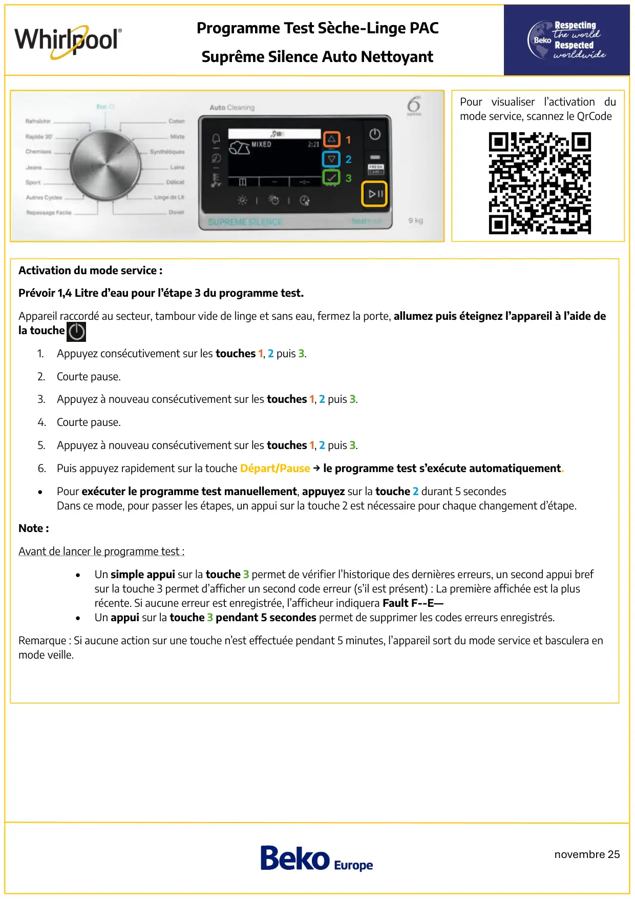
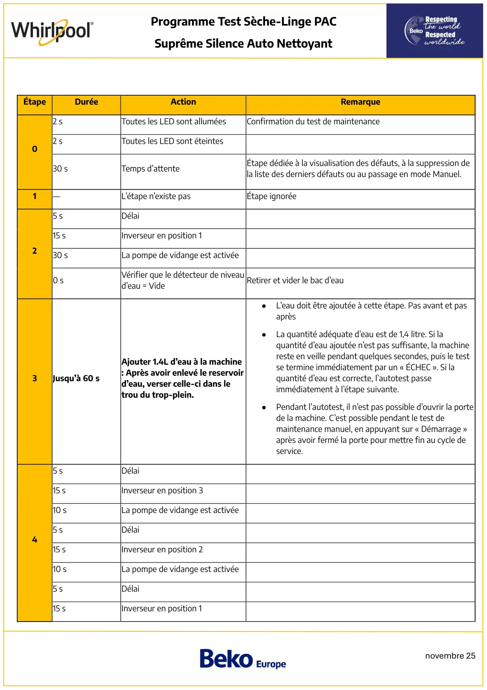
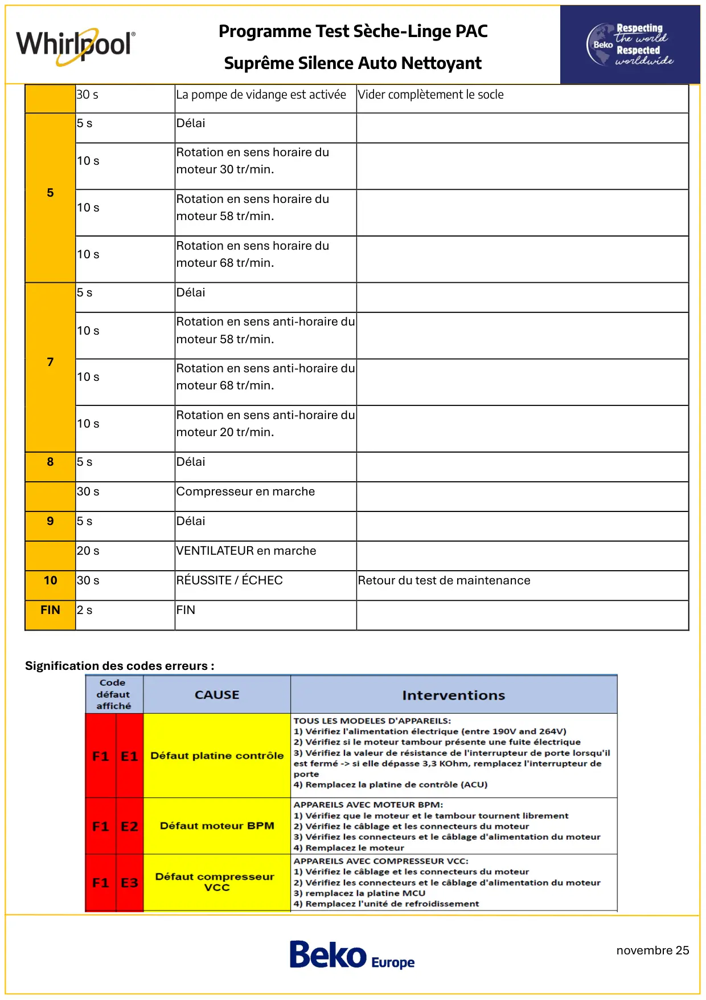
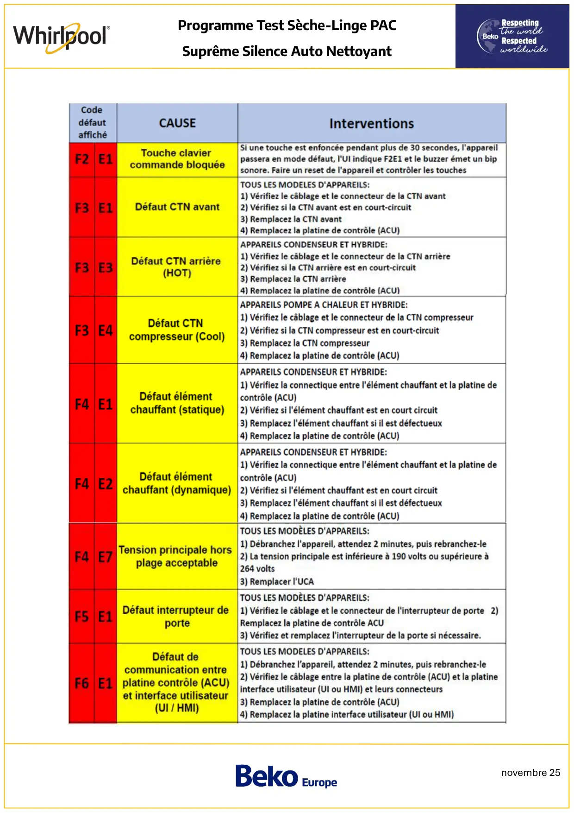
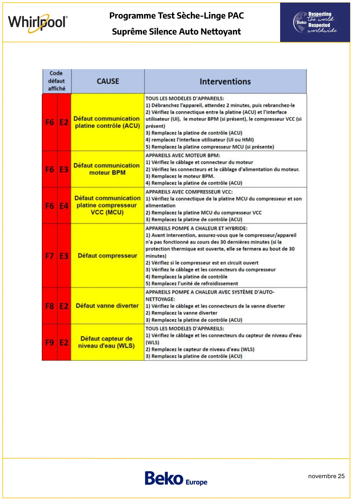

Prog Test seche linge PAC Whirlpool Premium AutoCleaning

novembre 25Programme Test Sèche-Linge PACSuprême Silence Auto NettoyantPour visualiser l’activation dumode service, scannez le QrCode123Activation du mode service :Prévoir 1,4 Litre d’eau pour l’étape 3 du programme test.Appareil raccordé au secteur, tambour vide de linge et sans eau, fermez la porte, allumez puis éteignez l’appareil à l’aide dela touche1.Appuyez consécutivement sur les touches 1, 2 puis 3.2.Courte pause.3. Appuyez à nouveau consécutivement sur les touches 1, 2 puis 3.4. Courte pause.5. Appuyez à nouveau consécutivement sur les touches 1, 2 puis 3.6. Puis appuyez rapidement sur la touche Départ/Pause → le programme test s’exécute automatiquement.•Pour exécuter le programme test manuellement, appuyez sur la touche 2 durant 5 secondesDans ce mode, pour passer les étapes, un appui sur la touche 2 est nécessaire pour chaque changement d’étape.Note :Avant de lancer le programme test :•Un simple appui sur la touche 3 permet de vérifier l’historique des dernières erreurs, un second appui brefsur la touche 3 permet d’afficher un second code erreur (s’il est présent) : La première affichée est la plusrécente. Si aucune erreur est enregistrée, l’afficheur indiquera Fault F--E—•Un appui sur la touche 3 pendant 5 secondes permet de supprimer les codes erreurs enregistrés.Remarque : Si aucune action sur une touche n’est effectuée pendant 5 minutes, l’appareil sort du mode service et basculera enmode veille.
1 / 5
novembre 25Programme Test Sèche-Linge PACSuprême Silence Auto NettoyantÉtapeDuréeActionRemarque02 sToutes les LED sont alluméesConfirmation du test de maintenance2 sToutes les LED sont éteintes30 sTemps d’attenteÉtape dédiée à la visualisation des défauts, à la suppression dela liste des derniers défauts ou au passage en mode Manuel.1—L’étape n’existe pasÉtape ignorée25 sDélai15 sInverseur en position 130 sLa pompe de vidange est activée0 sVérifier que le détecteur de niveaud’eau = VideRetirer et vider le bac d’eau3Jusqu’à 60 sAjouter 1.4L d’eau à la machine: Après avoir enlevé le reservoird’eau, verser celle-ci dans letrou du trop-plein.●L’eau doit être ajoutée à cette étape. Pas avant et pasaprès●La quantité adéquate d’eau est de 1,4 litre. Si laquantité d’eau ajoutée n’est pas suffisante, la machinereste en veille pendant quelques secondes, puis le testse termine immédiatement par un « ÉCHEC ». Si laquantité d’eau est correcte, l’autotest passeimmédiatement à l’étape suivante.●Pendant l’autotest, il n’est pas possible d’ouvrir la portede la machine. C’est possible pendant le test demaintenance manuel, en appuyant sur « Démarrage »après avoir fermé la porte pour mettre fin au cycle deservice.45 sDélai15 sInverseur en position 310 sLa pompe de vidange est activée5 sDélai15 sInverseur en position 210 sLa pompe de vidange est activée5 sDélai15 sInverseur en position 1
2 / 5
novembre 25Programme Test Sèche-Linge PACSuprême Silence Auto Nettoyant30 sLa pompe de vidange est activée Vider complètement le socle55 sDélai10 sRotation en sens horaire dumoteur 30 tr/min.10 sRotation en sens horaire dumoteur 58 tr/min.10 sRotation en sens horaire dumoteur 68 tr/min.75 sDélai10 sRotation en sens anti-horaire dumoteur 58 tr/min.10 sRotation en sens anti-horaire dumoteur 68 tr/min.10 sRotation en sens anti-horaire dumoteur 20 tr/min.85 sDélai30 sCompresseur en marche95 sDélai20 sVENTILATEUR en marche1030 sRÉUSSITE / ÉCHECRetour du test de maintenanceFIN2 sFINSignification des codes erreurs :
3 / 5
novembre 25Programme Test Sèche-Linge PACSuprême Silence Auto Nettoyant
4 / 5
novembre 25Programme Test Sèche-Linge PACSuprême Silence Auto Nettoyant
5 / 5